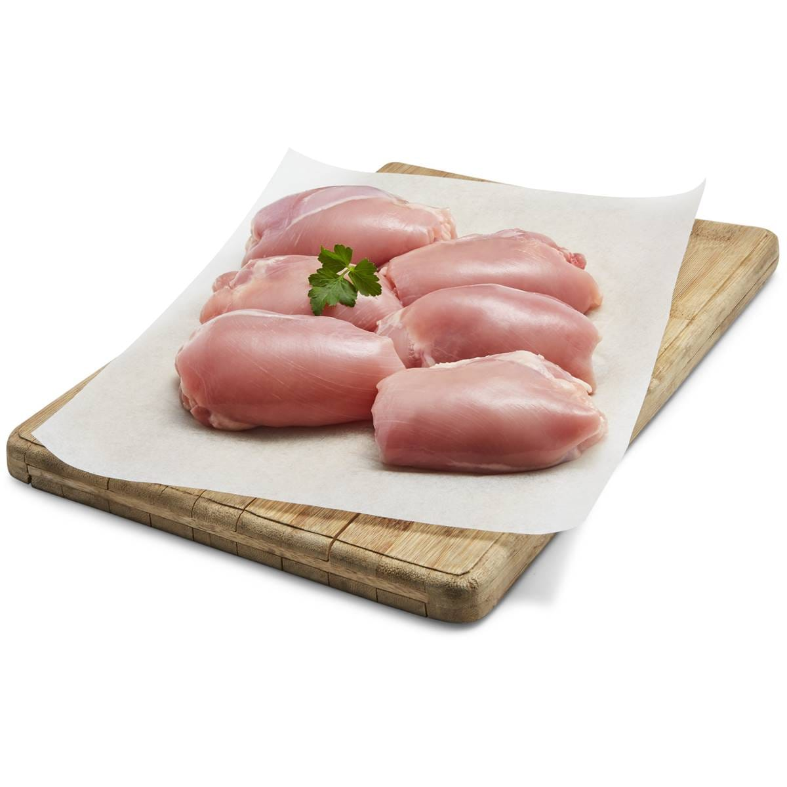
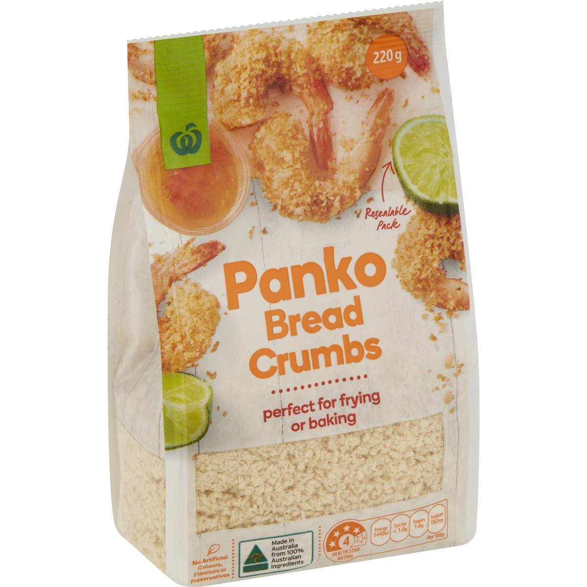
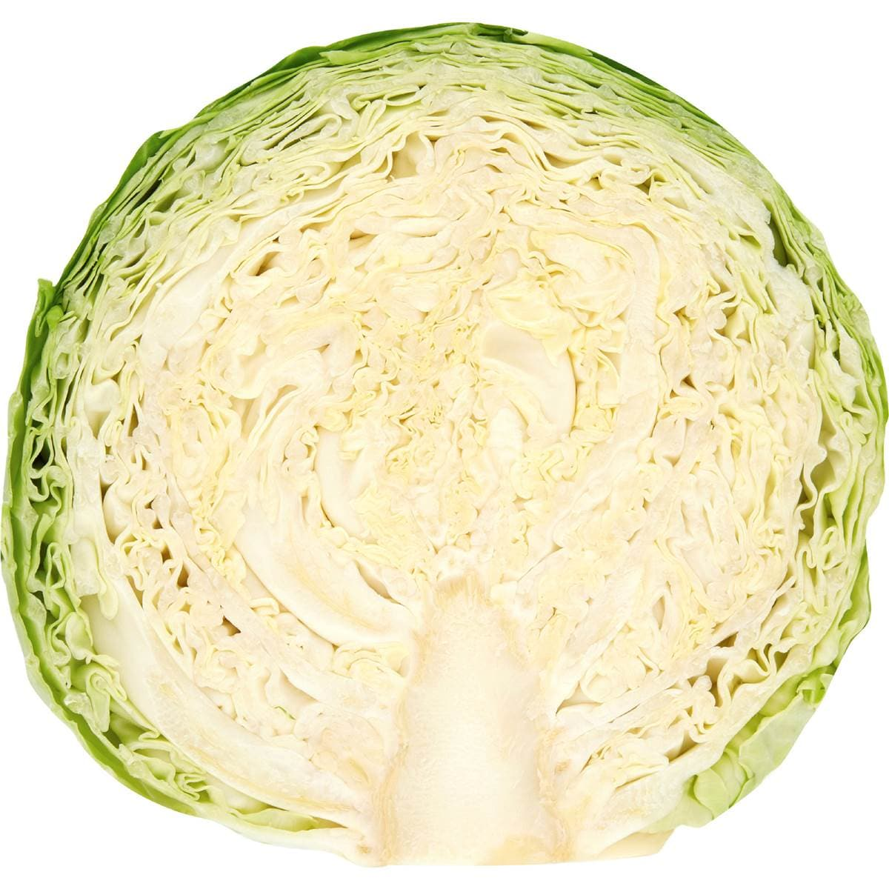
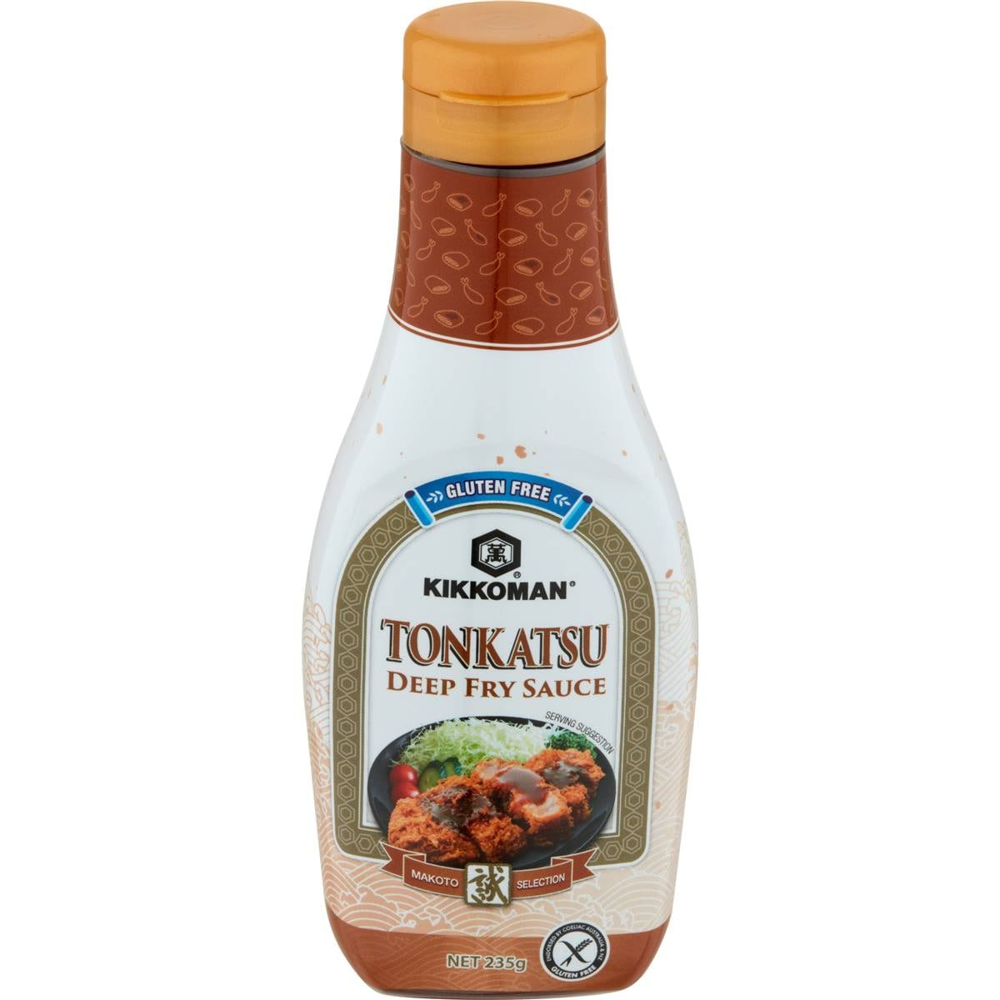
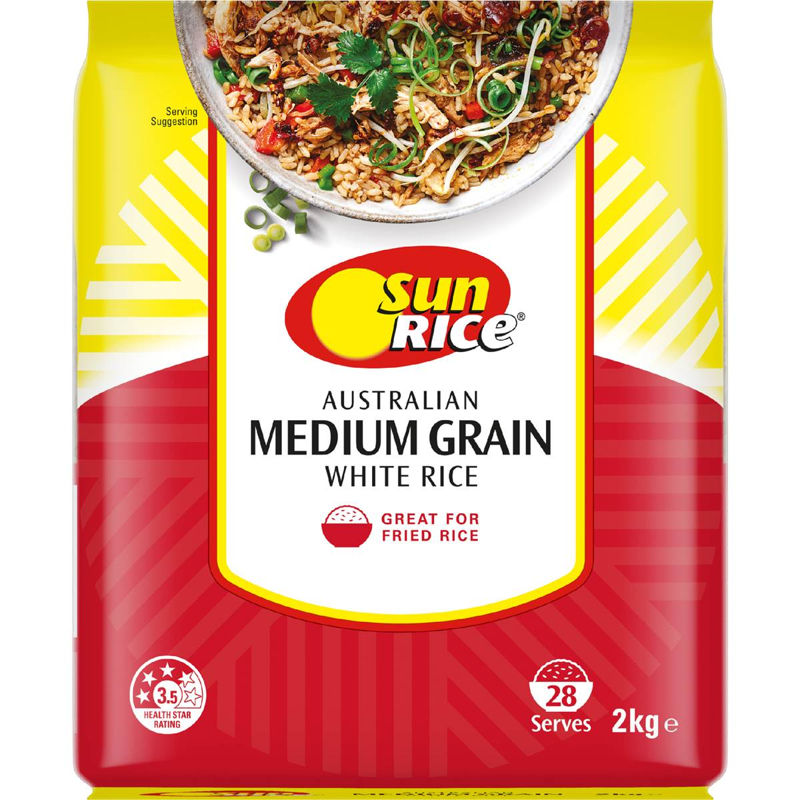

Chicken Katsu
Crisp panko-crumbed chicken thigh with finely shredded cabbage, rice and tonkatsu sauce.
Crisp panko-crumbed chicken thigh with finely shredded cabbage, rice and tonkatsu sauce.

2 chicken thigh fillets 1/2 cup plain flour
1/2 cup plain flour 2 eggs, beaten
2 eggs, beaten
1 1/2 cups panko breadcrumbs Salt and pepper
Salt and pepper
1/4 green cabbage
Tonkatsu sauce, to serve
1 1/2 cups medium grain riceDrain the chicken on a rack rather than paper towel; paper traps steam and softens the crust underneath.